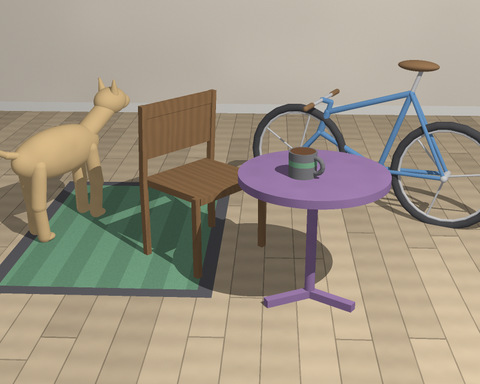
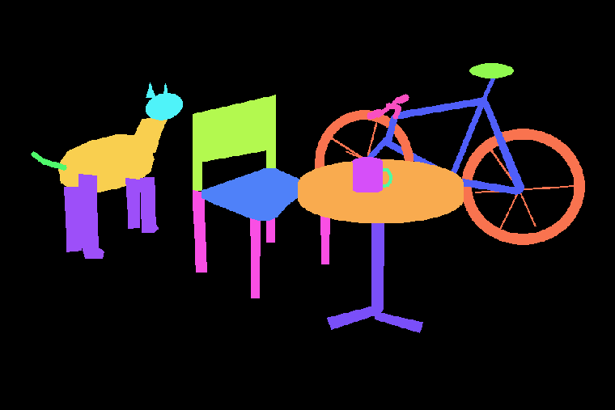

The image stays here

The input never enters the sandbox.
A benchmark for multimodal agents
Can Multimodal Agents Solve Classic Vision Tasks?
01 · The rule
MarrBench scores only what the agent itself saw.
Host · holds the pixels

The input never enters the sandbox.
20 views (crops, grids, overlays), shown only to the model.
Sandbox · no pixels, no vision models, no network
# bicycle
WHEEL, FRAME = 13, 14
ring(img, 816, 291, 96, 90,
17, WHEEL)
line(img, (620, 180),
(754, 157), FRAME, 10)
# top tubeIts generate.py: every coordinate comes from what it saw.

A fresh container runs it on metadata alone.
Five weighted checkpoints, after 25 steps.
How the scale is anchored
02 · Leaderboard
Ten models on all 54 tasks under one harness.
Bold: best; underline: second best. Overall: equal-weight mean over 54 tasks; 95% CI: percentile bootstrap over tasks. C−P: coarse- minus pixel-level checkpoint credit.
03 · Look closer
Re-executed outputs of all ten models on ten representative tasks.
04 · Team
Project leader
Xiaogang Xu2
Core contributors
Jiaqi Tang1Youyang Zhai3Yaoyu Yang3 Jianmin Chen3Botong Geng3Yingying Yan3 Lihao Liu3
Contributors
Wei Wei3Kelu Yao4Xiaobin Hu5 Aimin Pan6Jiafei Wu2Zhe Liu2 Shuicheng Yan5
Corresponding author
Qifeng Chen1
@techreport{tang2026marrbench,
title = {MarrBench: Can Multimodal Agents Solve Classic Vision Tasks?},
author = {Tang, Jiaqi and Xu, Xiaogang and Zhai, Youyang and Yang, Yaoyu
and Chen, Jianmin and Geng, Botong and Yan, Yingying and Liu, Lihao
and Wei, Wei and Yao, Kelu and Hu, Xiaobin and Pan, Aimin
and Wu, Jiafei and Liu, Zhe and Chen, Qifeng and Yan, Shuicheng},
year = {2026},
type = {Technical Report},
institution = {MarrBench},
url = {https://github.com/OceanMind-Lab/MarrBench}
}